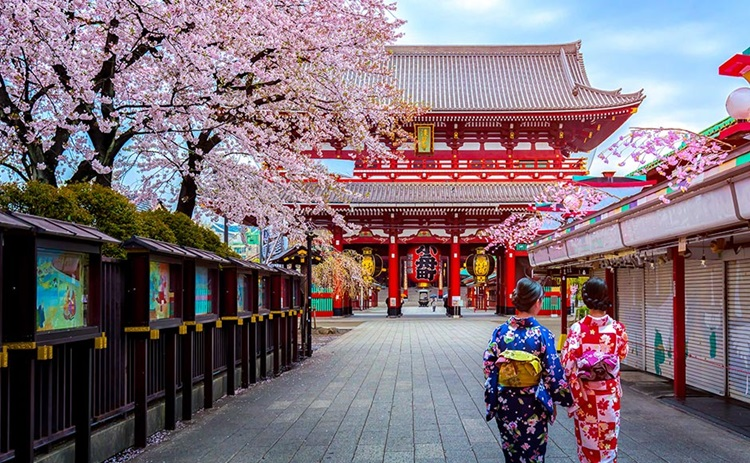

Sensoji Temple

History
shallow grass
Kaminarimon
Next
Sensoji Temple in Asakusa is the oldest and most famous temple in Tokyo with a history going back 1,400 years. This temple is dedicated to Kannon, the Buddhist goddess of mercy, and it is incredibly popular with millions of people visiting every year.
shallow grass
Next
{kind=link}
The district of Asakusa and Sensoji Temple are so deeply connected that their names are written using the same Chinese characters: 浅草, which means “shallow grass”. “Senso” is the Chinese pronunciation, and “Asakusa” is the Japanese pronunciation. When Sensoji was first founded, the Asakusa area was not a busy town like today, but a wild grassland where very few people lived. Thanks to Sensoji however, Asakusa became a lively center of pilgrimage and trade. The temple is the true heart of the town.
Kaminarimon
Next Destination
Back To Tokyo

The main entrance of Sensoji is the Kaminarimon (literally “Thunder Gate”) which with its enormous red and black chochin lantern has become a popular symbol of Asakusa. This is the outer gate of the temple and it enshrines two statues of the gods of the wind and thunder. The gate was first built around the year 942, but burned down many times. After it was destroyed by fire in 1865, it wasn’t rebuilt for another 95 years, but in 1960 both the gate and its statues were fully restored. To learn more about this famous landmark, see our article: Kaminarimon – Asakusa’s Thunder Gate.